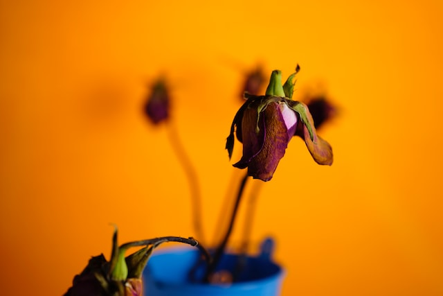

Wilted Flowers

Wilted flowers are a lovely way to celebrate a special occasion. This quick recipe can be prepared in less than a week and only requires a few simple ingredients.
Ingredients
- Bacteria (Pseudomonas aeruginosa if available)
- Water
- Ribbon or String
- Sunlight
Recipe Steps
- Add excessive water to the vase that contains the flowers.
- Mix bacteria into the water until the water becomes moderately turbid.
- Allow the flowers to incubate in the bacteria water for several days.
- When the flowers begin to look wilted, remove all of the water.
- Place the vase in sunlight until the wilting process completes
- Remove the wilted flowers from the vase
- Tie a fancy bow around your wilted flowers with your choice of ribbon or string.